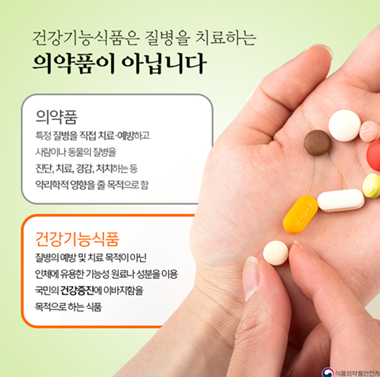

건강기능식품에 대해 알아보자.
건강기능식품이란
건강기능식품과 일반식품의 차이점
건강기능식품과 의약품의 차이점
고시형 건강기능식품
개별인정형 건강기능식품
WATH? 건강기능식품과 의약품의 차이점
건강기능식품의 기능성은 의약품과 같이 질병의 직접적인 치료나 예방을 하는 것이 아니라 인체의 정상적인 기능을 유지하거나 생리기능 활성화를 통하여 건강을 유지하고 개선하는 것을 말합니다.
